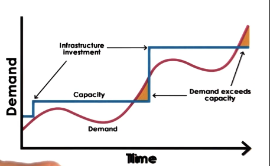
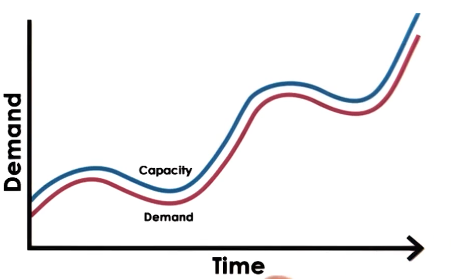
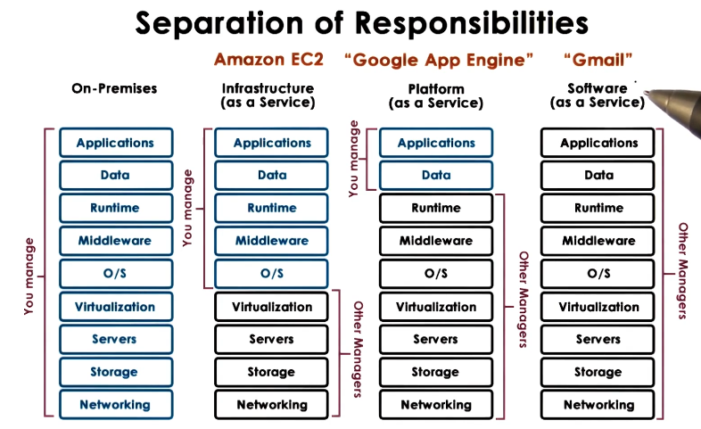
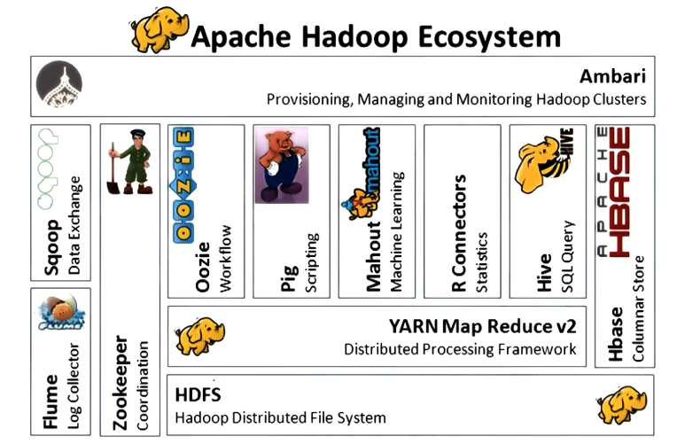
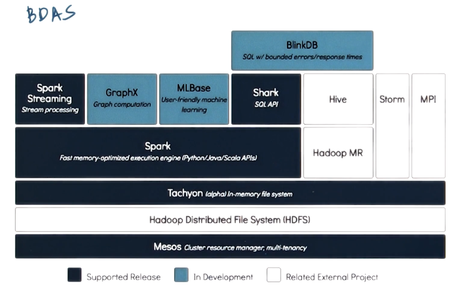

GIOS Lecture Notes - Part 4 Lesson 4 - Data Center Technologies
Data Center Technologies
Internet Services
- Internet service == any type of service provided via web interface
- Generally have 3 layers
- Presentation == static content
- Business logic == dynamic content
- Database tier == data store
- Those three are not necessarily separate processes on separate machines
- Many available open source and proprietary technologies for each of the above
- Middleware == supporting, integrative, or value-added software technologies
- D&R, security, accounting, provisioning, etc. Tons of these
- In multiprocess configurations, some form of IPC must be used
- RPC/RMI, Shared Memory, etc.
Internet Service Architectures
- For scale: multi-process, multi-node
- “Scale out” architecture – deal with increases in incoming request rates
- Can just launch the same service on new machines if more are needed. e.g. “spinning up” cloud resources.
- “Scale out” architecture – deal with increases in incoming request rates
- Boss-worker:
- Front-end distributes requests to nodes
- All Equal:
- All nodes executge any possible step in requst processing, for any request
- Functionally homogeneous
- Specialized Nodes:
- nodes execute some specific step(s) in request processing, for some request types
- Functionally heterogeneous
Homogeneous Architectures
- Each node:
- can do any processing step
- can process any type of request
- Pros
- Keeps front-end simple – doesn’t have to keep track of node capabilities
- Doesn’t mean that each node has to store all data, just that each node can get to all data
- Cons
- Little opportunity to benefit from caching
- Front end can’t assign work based on locality
Heterogeneous Architectures
- Different nodes are designated to perform different tasks or steps
- Data doesn’t have to be uniformly accessible everywhere
- Still possible to have data distributed in ways that are convenient or efficient
- Pros
- Can take advantage of the benefits of locality and caching
- Cons
- More complex front end
- Must track information about node capability
- Must parse requests enough to know how to hand work out to the correct nodes
- More complex management
- Coordination of tasks
- Coordination of data distribution
- Load balancing is more complex
- More complex front end
Cloud Computing Poster Child: Animoto
- Amazon
- provisioned hardware resources for holiday sale season
- resources idle the rest of the year
- or used for other company tasks – analytics or similar
- Opened access to its resources via web-based APIs
- Third party workloads on Amazon hardware, for a fee
- This is the birth of Amazon Web Services (AWS) and Amazon’s Elastic Compute Cloud (EC2)
- Animoto rented compute instances in EC2
- SAAS – Turns a series of pictures into a video.
- Compute heavy, involves lots of image processing steps
- Wanted to focus resources on algorithm development instead of acquisition of hardware
- Was doing pretty well, required about 50 instances
- In April 2008, became available to Facebook users
- On a monday they had 50 instances, by Friday they needed 3400
- 350,000 new users in 3 days
- Could never have been achieved with traditional in-house machine deployment and provisioning tools
Cloud Computing Requirements

- Traditional Approach
- buy and configure resources
- determine capacity based on expected demand (peak)
- When demand exceeds capacity
- dropped requests
- lost opportunity
- buy and configure resources

- Ideal Cloud
- Capacity scales elastically with demand
- Scaling is instantaneous, both up and down
- Cost is proportional to demand, and also to revenue opportunity
- All of this happens automatically
- Can access these resources anytime, anywhere
- One gotcha – you don’t own these resources
Cloud Computing Requirements: Summarized
- On-demand, elastic resources and services
- Fine-grained pricing based on usage
- Professionally managed and hosted
- API-based access
Cloud Computing Overview
- Shared resources
- Infrastructure and software/services
- Both of these are worthwhile, as the value prop of cloud computing is heavily reduced if you have to hire your own engineers to maintain and configure all the software and services yourself. Far easier to rent both if you are going to rent the infrastructure.
- APIs for access and configuration
- web-based, libraries, command line, etc.
- Billing/accounting services
- Many models: spot, reservation, etc
- there’s an entire marketplace around this
- Typically discrete quantities:
- tiny, medium, XL, etc.
- Too difficult to manage below a certain level of granularity
- Many models: spot, reservation, etc
- All managed by the cloud provider
Why Does Cloud Computing Work?
- Law of Large Numbers
- per customer there is large variation in resource needs over time
- average across many customers is roughly constant
- this means that a fixed-size cloud should be able to accommodate the varying “peaks” its customers experience
- Economies of Scale
- unit cost of providing resources or service drops at “bulk”
- things are always cheaper by the dozen
Cloud Computing Vision
- Although cloud computing is a (relatively) recent trend, the concept/vision for it is quite old
- “If computers of the kind I have advocated become the computers of the future, then computing may some day be organized as a public utility, just as the telephone system is a public utility. The computer utility could become the basis of a new and important industry.” –John McCarthy, MIT Centennial, 1961
- By this logic, cloud computing should turn compute into a fungible utility, where we don’t know or care where the cycles are being run, nor on what kind of hardware
- Limitations exist:
- API lock-in, hardware dependence, latency, privacy, security, etc.
Cloud Deployment Models
- Public
- third party customers/tenants use infrastructure on top of provider hardware
- infrastructure belongs to cloud provider
- Private
- leverage technology and infrastructure internally
- Hybrid (Public + Private)
- Commonly used for: failover, dealing with spikes, testing
- Community
- Public cloud where third-party users are of a specific type
Cloud Service Models

Requirements for the Cloud
- Fungible Resources
- Resources can easily be repurposed to support different customers with different requirements
- Necessary to deal with variation in available machines. Users shouldn’t see that
- Elastic, dynamic resource allocation methods
- Scale: management at scale, scalable resource allocations
- Dealing with failures
- at scale, failures become inevitable.
- dynamic, resilient failover mechanisms are required
- Multi-tenancy: performance and isolation
- across both multiple workloads and multiple tenants
- Security
- isolation of the state that is accessed
Cloud Enabling Technologies
- Virtualization
- required to address fungibility
- Resource provisioning (scheduling)
- Mesos, Yarn
- Big Data
- Processing – Hadoop MapReduce, Spark
- Storage
- Distributed FS (“append only”)
- NoSQL, distributed in-memory caches
- Software-defined
- networking
- storage
- datacenters
- Monitoring
- real time log processing (Flume, CloudWatch, Log Insight)
The Cloud as a Big Data Engine
- Modern society generates astronomical amounts of data. The cloud democratizes access to compute resources that can handle problems at that scale.
- Data storage layer
- Data processing layer
- easily describe parallel applications
- Caching layer
- Language front-ends
- e.g. querying
- Analytics libraries
- e.g. ML
- Continuously streaming data
- e.g. Kafka
- new data streaming in all the time, service to handle that
Example Big Data Stacks
- Hadoop

- Berkeley Data Analytics Stack (BDAS)
